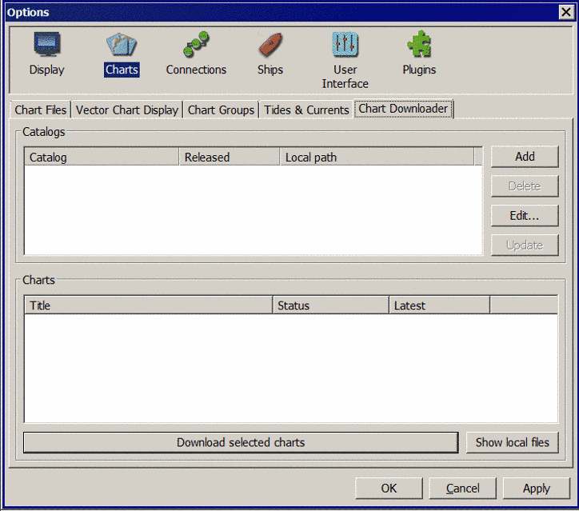
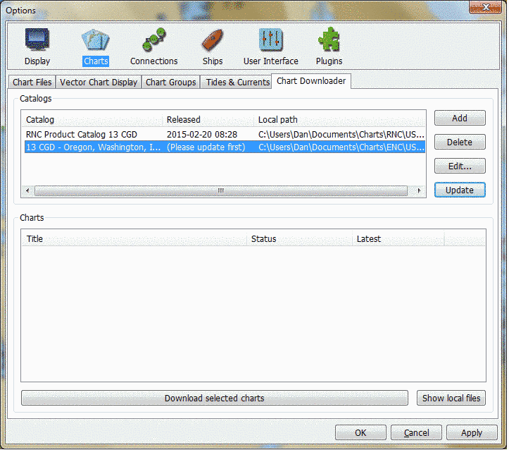
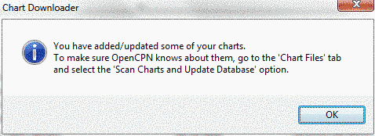

Chartdldr Plugin provides easy access to free charts available for download from the Internet and helps you keep them up to date.
The Chart Downloader relies on catalogs of charts. A catalog is an XML file containing the names of charts along with the most recent chart update date and time together with the Internet address of the actual chart data. Before being able to download any charts we have to configure and download one or more chart catalogs.
The catalogs are provided by the agencies publishing the charts (NOAA and the Army Corps of Engineers in the USA) and by the ChartCatalogs project created by the author of this plugin. When a catalog is loaded the Chart Downloader automatically scans the existing charts on your computer looking for updated or new charts listed in the catalog.
After installing and enabling the plugin (refer to the Installation chapter) a new tab is added to the OpenCPN Options Toolbox, accessible by clicking on the wrench icon in the toolba, allowing you to manage your chart downloads.
This is what the plugin looks like when first opened by clicking
Options
>
Charts
>
Chart Downloader
:

The screen has two sections.
The top section is for Chart Catalogs. Some chart sources provide many different catalogs for the same set of charts. For example, in the USA, NOAA provides chart catalogs for each state, region and Coast Guard district as well as the huge complete set. There are also separate catalogs for raster (RNC) and vector (ENC) NOAA charts. The first step in getting new charts is to select the appropriate Chart Catalog, make sure you think first though - having everything is not always the best option to organize your charts, so especially in the US, consider using more smaller catalogs over the one with the complete set of thousands of charts.
Click the “ Add ” button to get the “ New chart source ” dialog.
There are “
Predefined
” catalogs for all the free chart sources worldwide known at the time of the release of this plugin. The catalogs are organized in a folder structure. Open each folder to see subfolders. Open subfolders to see catalogs. Select any catalog you like by clicking the catalog description. After clicking the catalog the “
Chart Directory
” will be automatically filled in. This is the directory on your computer where the catalog and the charts for this catalog will be downloaded. If the recommended directory is acceptable click “
OK
”. Otherwise you can use the “
Browse
” button to browse to another directory where you want the catalog and charts to be kept. Once you are happy with the Chart Directory click “
OK
”.
In case you selected a path to save the charts not covered by the current OpenCPN configuration, the plugin configures it for you.
You can check the configuration on the
Chart Files
tab. For more details about managing your charts, you should definitely read the relevant
OpenCPN documentation
.

Now you will see the Chart Catalog listed in the Catalogs section. Note that it will say (Please update first) under the “ Released ” column. Click the catalog name then click the “ Update ” button. The downloader will retrieve the catalog from the server. After the catalog is saved a list of charts will appear in the lower section. Each chart has a check box. If the box is checked then that chart is scheduled to be downloaded. Depending on the Preferences you selected earlier the boxes will be automatically checked. You can check or uncheck individual charts or use the right mouse button to check and uncheck groups of charts.
The US agencies update their catalogs on a standard weekly schedule, related to the Notice to Mariners releases. The catalogs from the ChartCatalogs project are updated occasionally, without any fixed schedule. You should select the chart source and click the Update button every once in a while to get the latest chart updates.
You can select the charts to be downloaded by ticking the checkboxes in the list of charts. In case you want to select multiple charts at once,
right-click
in Chart Window will show a context menu, allowing you to “
Select all
” charts,”
Deselect all
” charts, “
Invert selection
”, “
Select updated
” charts and “
Select newly released
” charts. You can configure the plugin to automatically preselect the updated and/or new charts after an update of the chart catalog in the preferences.

After selecting the charts for download, click the “ Download selected charts ” button to start downloading the charts. It can be a lengthy progress and a dialog box showing progress will pop as each chart is downloaded. If any charts do not download correctly a warning will pop up at the end. The status of the charts that have been downloaded successfully will change to “Up to Date”. Sometimes a slow or flaky Internet connection will cause a chart not to download and the status will remain the same. You can just click the “ Download selected charts ” button again give them a second chance.
Chart Folder Tab and Chart Group Tab reminder.
A reminder box will pop up to tell you that you have to notify OpenCPN where to find the charts. We’ll do that in the next step.
After the charts are downloaded, you have to tell OpenCPN to update it’s internal chart database and the plugin will remind you about it with a dialog.

For more details you should definitely read the relevant OpenCPN documentation .
To make it short, go to Options > Charts > Chart Files tab and tick the Scan Charts and Update Database checkbox and when you close the Toolbox using the OK button, your newly downloaded charts will be scanned and made available for viewing.
The button Show Local Files on the lower right will open your default file manager in a separate window, which allows you to check files and directories easily.

You can customize the behavior of the plugin to certain extent. To access the preferences, select the Chart Downloader plugin on th Options > Plugins tab and click on the Preferences button

The Default Path to Charts option allows you to set the top directory for all your charts, used to construct the suggested locations for the chart sources you configure.
The All updated charts and All new charts checkboxes tell the plugin which charts you want to select for download automatically upon a catalog update.
The Allow bulk update of all configured chart sources and charts checkbox adds a new button to the chart downloader tab, allowing you to update and download all the charts you are managing using the plugin with a single click. The behavior of this function depends on the forementioned checkboxes - either it downloads only new or updated charts or both.